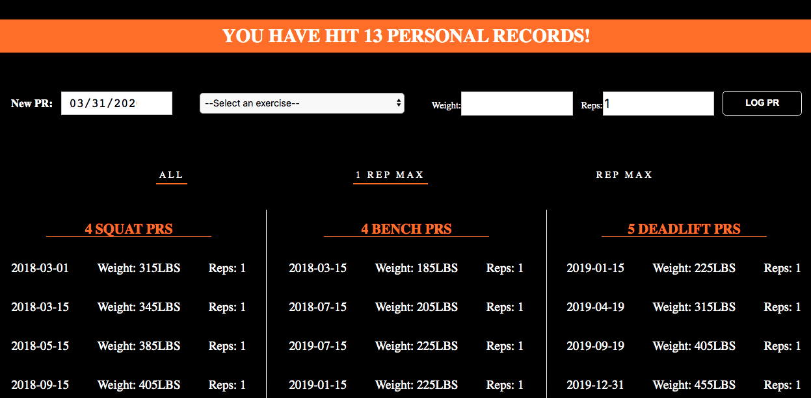
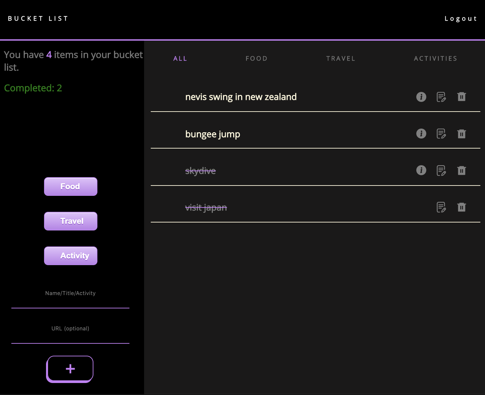

SKILLS
Javascript
Ruby
Ruby on Rails
React
Redux

HTML5

CSS3
PostGreSQL
Node.js
Git

I am a software engineer based in San Francisco, CA with experience in Javascript, Ruby/Ruby on Rails, React and Redux. My hometown is Los Angeles, where I earned my degree in Kinesiology Exercise Science and worked as a certified personal trainer and physical therapy aide.
I am a fitness enthusiast and I love building things, so I combined my two passions by developing web applications on my free time for myself and other athletes to use. Whether it is helping with fitness training, choosing a place to eat, or calculating how to split the bill, I believe there are multiple solutions to a problem and there are a variety of ways to be more efficient in daily tasks. Being able to design and create projects to help with efficiency is what excites me most.
An e-commerce store where users can view and buy product listings for fitness gear and apparel. Built with Javascript, React, Redux, Ruby on Rails, and PostgreSQL. Inspired by BMFitGear.
Are you hungry? Don't know what to eat? This single-page web application will decide for you based on your current location and preferences. Built with MERN stack and integrated Google Maps API and Yelp API.

A single-page web application for athletes, specifically powerlifters, to keep track of personal records and body composition. Built with Javascript, React, Redux, Rails, and PostgreSQL

A single-page web application to organize and track bucket list items. Users can add, cross off, and update items in the list. Built with Javascript, React, Redux, Rails, and PostgreSQL